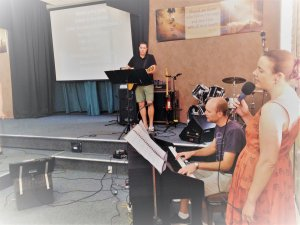

<?xml version="1.0" encoding="UTF-8"?><rss version="2.0"
	xmlns:content="http://purl.org/rss/1.0/modules/content/"
	xmlns:wfw="http://wellformedweb.org/CommentAPI/"
	xmlns:dc="http://purl.org/dc/elements/1.1/"
	xmlns:atom="http://www.w3.org/2005/Atom"
	xmlns:sy="http://purl.org/rss/1.0/modules/syndication/"
	xmlns:slash="http://purl.org/rss/1.0/modules/slash/"
	>

<channel>
	<title>General Information &#8211; Wagga Church of Christ</title>
	<atom:link href="https://www.waggachurchofchrist.org.au/category/general-information/feed/" rel="self" type="application/rss+xml" />
	<link>https://www.waggachurchofchrist.org.au</link>
	<description>Growing together In Christ to Impact Our World</description>
	<lastBuildDate>Sun, 30 Dec 2018 05:21:35 +0000</lastBuildDate>
	<language>en-AU</language>
	<sy:updatePeriod>hourly</sy:updatePeriod>
	<sy:updateFrequency>1</sy:updateFrequency>
	<generator>https://wordpress.org/?v=4.9.9</generator>

<image>
	<url>https://www.waggachurchofchrist.org.au/wp-content/uploads/2016/07/cropped-cross_sml_2-32x32.png</url>
	<title>General Information &#8211; Wagga Church of Christ</title>
	<link>https://www.waggachurchofchrist.org.au</link>
	<width>32</width>
	<height>32</height>
</image> 
	<item>
		<title>What happens at Chat &#8216;n Play?</title>
		<link>https://www.waggachurchofchrist.org.au/what-happens-at-chat-n-play/</link>
		<pubDate>Sun, 16 Oct 2016 10:01:50 +0000</pubDate>
		<dc:creator><![CDATA[Wagga Church of Christ]]></dc:creator>
				<category><![CDATA[General Information]]></category>

		<guid isPermaLink="false">https://www.waggachurchofchrist.org.au/?p=711</guid>
		<description><![CDATA[<p>Chat &#8216;n Play meets every Wednesday and is an informal catch up over a cuppa for parents or carers with young children. When is it? Chat &#8216;n Play starts at 10:00am every Wednesday, and is made up of a group of mum&#8217;s, dads, grandparents and carers who have young children. Who goes? Chat &#8216;n Play is open to&#8230;</p>
<p>The post <a rel="nofollow" href="../../../what-happens-at-chat-n-play/index.html">What happens at Chat &#8216;n Play?</a> appeared first on <a rel="nofollow" href="../../../index.html">Wagga Church of Christ</a>.</p>
]]></description>
				<content:encoded><![CDATA[<h2>Chat &#8216;n Play meets every Wednesday and is an informal catch up over a cuppa for parents or carers with young children.</h2>
<h3>When is it?</h3>
<p>Chat &#8216;n Play starts at 10:00am every Wednesday, and is made up of a group of mum&#8217;s, dads, grandparents and carers who have young children.</p>
<h3>Who goes?</h3>
<p>Chat &#8216;n Play is open to anyone who wants to come along. Our large play environment is suitable for babies through to pre-school aged children.</p>
<h3>What do I need to bring?</h3>
<p>As it is an informal-style of playgroup, morning tea and craft rosters help to spread the load of needing to bring something each week! A gold coin donation helps with our craft supplies.</p>
<p>To find out more information contact the church on <a href="tel:0269255661">02 6925 5661</a></p>
<p></p>
<p>The post <a rel="nofollow" href="../../../what-happens-at-chat-n-play/index.html">What happens at Chat &#8216;n Play?</a> appeared first on <a rel="nofollow" href="../../../index.html">Wagga Church of Christ</a>.</p>
]]></content:encoded>
			</item>
		<item>
		<title>What happens at a Sunday Worship Service?</title>
		<link>https://www.waggachurchofchrist.org.au/what-happens-at-a-sunday-worship-service/</link>
		<pubDate>Sun, 16 Oct 2016 09:48:49 +0000</pubDate>
		<dc:creator><![CDATA[Wagga Church of Christ]]></dc:creator>
				<category><![CDATA[General Information]]></category>

		<guid isPermaLink="false">https://www.waggachurchofchrist.org.au/?p=706</guid>
		<description><![CDATA[<p>Sunday Worship Services are a great time where our regular church family, visitors and guests come together to Praise God! How long does it go for? We start the service at 9:45am with some praise and worship songs, and generally have finished the service and are having a cuppa by 11:15am. Who goes? People from different nationalities and different walks of&#8230;</p>
<p>The post <a rel="nofollow" href="../../../what-happens-at-a-sunday-worship-service/index.html">What happens at a Sunday Worship Service?</a> appeared first on <a rel="nofollow" href="../../../index.html">Wagga Church of Christ</a>.</p>
]]></description>
				<content:encoded><![CDATA[<h2>Sunday Worship Services are a great time where our regular church family, visitors and guests come together to Praise God!</h2>
<h3>How long does it go for?</h3>
<p>We start the service at 9:45am with some praise and worship songs, and generally have finished the service and are having a cuppa by 11:15am.</p>
<h3>Who goes?</h3>
<p>People from different nationalities and different walks of life, church members, non-members, visitors and guests &#8211; young people, older people, children and families and everyone else in between &#8211; people just like you!</p>
<h3>What happens?</h3>
<p>When you arrive at the Wagga Church of Christ on a Sunday morning, you will be greeted at the door by friendly and welcoming people. We share in friendship and fellowship with each other in an environment that is inclusive and friendly.</p>
<p>The worship leader and musicians lead us in worship and we sing songs to praise God and give thanks to Him for what he has done in our lives.</p>
<p>We pray (sometimes silently and sometimes aloud) for each other and our friends, families and our local and global communities.</p>
<p>Each week, we take up a collection or &#8220;offering&#8221; for the work of the church and to help those who need it most. We give because God first gave to us, and there is no obligation to give, especially if you are a visitor.</p>
<p>The Pastor or speaker delivers a sermon or message from the Bible, and we sit and listen and reflect on the words spoken.</p>
<p>Some weeks we share communion or &#8220;the Lords supper&#8221; which is where we remember Jesus Christ&#8217;s amazing sacrifice for us on the cross.</p>
<p>At the end of the service, we say g&#8217;day to each other and catch up on how things are going over a cuppa and some morning tea.</p>
<h3></h3>
<h3>Do I have to be a Christian?</h3>
<p>Not at all! Church would be pretty lame if it was only for Christians &#8211; on the contrary, we encourage anyone to come and be with us at the Wagga Church of Christ.</p>
<h3>Can I bring my children along?</h3>
<p>Of course you can! Your children are most welcome with you in the service and we also have a Kids Church where school-aged children break out into their own session half way through the service led by capable and loving leaders who have the required working with children&#8217;s checks and clearances. We also have a crèche that is there for the babies to pre-schoolers, and lots of caring mums and dads with their own children.</p>
<h3>Is there car parking?</h3>
<p>Yes &#8211; there is plenty of parking around the streets adjacent to the church and within the church carpark.</p>
<h4></h4>
<h4>If you have any other questions, please drop us a line or email and we would love to answer them for you.</h4>
<p>Pastor Ross Brinkman</p>
<p>&nbsp;</p>
<p>&nbsp;</p>
<p>The post <a rel="nofollow" href="../../../what-happens-at-a-sunday-worship-service/index.html">What happens at a Sunday Worship Service?</a> appeared first on <a rel="nofollow" href="../../../index.html">Wagga Church of Christ</a>.</p>
]]></content:encoded>
			</item>
	</channel>
</rss>
